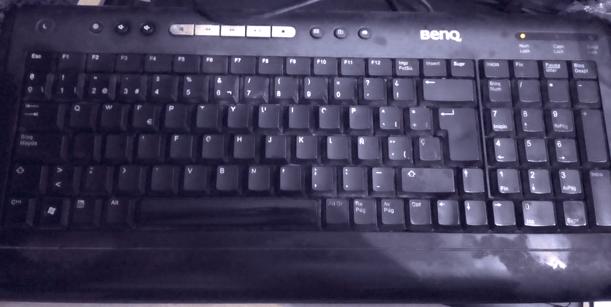
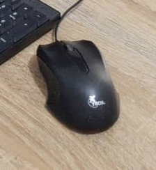

Monitor
Limpieza y verificación de conexiones
Ver guía paso a paso
1. Desconexión y seguridad
Apaga el monitor y desconéctalo de la corriente. Espera al menos 30 segundos antes de manipularlo.
2. Limpieza de pantalla
Usa un paño de microfibra.
Aplica limpiador especial para pantallas o alcohol isopropílico al 70%.
No rocíes el líquido directamente sobre la pantalla.
3. Limpieza de estructura
Pasa un paño ligeramente húmedo por la base, marco y parte trasera.
4. Revisión de conexiones
Verifica cables VGA, HDMI o DisplayPort.
Asegura que no estén doblados o rotos.
Comprueba que la fuente de poder funcione correctamente.

Teclado
Limpieza profunda y verificación de funcionamiento
Ver guía paso a paso
1. Preparación
Desconecta el teclado y voltéalo suavemente para retirar el polvo suelto.
2. Limpieza entre teclas
Usa aire comprimido para expulsar suciedad.
3. Limpieza profunda
Con un hisopo y alcohol isopropílico limpia cada tecla individualmente.
4. Revisión
Conecta el teclado y prueba cada tecla con un probador online para asegurarte de que responde correctamente.

Mouse
Limpieza externa, sensor y revisión de botones
Ver guía paso a paso
1. Limpieza externa
Pasa una toalla ligeramente humedecida por la superficie del mouse.
2. Limpieza del sensor
Con un hisopo seco o aire comprimido, limpia el sensor inferior para evitar fallas de movimiento.
3. Limpieza de la rueda
Mueve la rueda varias veces mientras soplas o aplicas aire comprimido.
4. Revisión de botones
Haz clic repetidamente para verificar que ninguno se quede pegado. En mouse USB, prueba en otra PC si no responde.